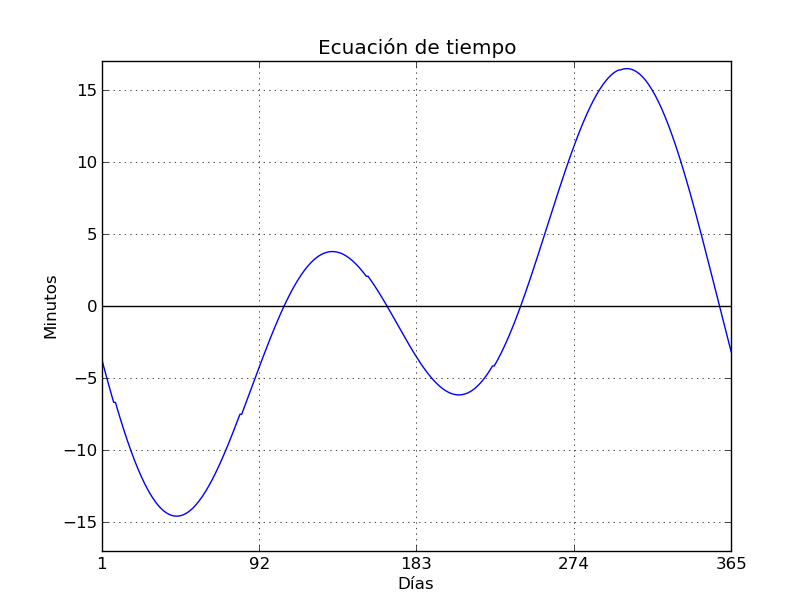

Calculando la hora exacta
Una de las primeras nociones básicas que más desconciertan al que se inicia en la astronomía de posición es el cálculo de la hora con respecto a la posición del Sol. Todos tenemos la intuición de que la hora de cada lugar se establece en base a una referencia llamada Greenwich, en Londres. A partir de ahí, teniendo en cuenta la longitud de nuestra ubicación respecto de este lugar se calcula nuestro desfase horario. Pero el tema del cálculo de la hora es algo más complicado en parte por el complejo sistema mecánico que forman la Tierra y el Sol.
En este sistema tenemos que la Tierra se mueve con respecto al Sol de forma irregular durante todo su recorrido (traslación) debido a que esta orbita es elíptica. Esta irregularidad fue formulada por Kepler en sus leyes sobre el movimiento orbital. Simplificando mucho diremos que la Tierra se mueve más lenta en su Afelio, punto en el que se encuentra más lejos del sol y se mueve más rápido en su Perihelio, punto en el que está más cerca del sol. Esto es fácil de entender si nos imaginamos el sistema Tierra-Sol en un plano vertical en lugar de horizontal (como se suele ilustrar) con el Sol fijo en su centro. La Tierra asciende desde el Perihelio rápidamente hasta alcanzar el Afelio (el punto más alto en este caso) y lentamente comienza su caída hacia el Sol de nuevo aumentando su velocidad por el otro lado hasta traspasar la posición del astro.
Además del movimiento orbital, nuestro planeta está sometido a otras perturbaciones que hacen que el llamado Tiempo Solar Verdadero, el que marca el reloj de Sol, y el tiempo que marcan nuestros relojes no sean el mismo. Para calcular esta diferencia no existe una ecuación o formula fija. Tenemos sin embargo, diferentes heurísticas con las que poder aproximar esta cantidad que varia aproximadamente desde cero hasta más/menos 15 minutos y que para complicar más las cosas, hemos de recalcular cada pocos años.

Buscando un rato encontré hasta tres heurísticas que aproximan la diferencia bastante bien. La gráfica muestra una de ellas y, en ella, se puede observar que el mínimo se produce sobre el 19 de Febrero y el máximo el 2 de Noviembre. Igualmente, la diferencia de tiempos se hace cero cuatro veces al año, aproximadamente en los dos solsticios y en los dos equinoccios. Tenéis todas estas funciones implementadas en mi Github por si queréis ojearlas.
Como curiosidad antes de terminar debo añadir que esta ecuación tiene su reflejo geométrico en el Analema o curva que describe las diferentes posiciones del Sol todos los días del año observado desde el mismo lugar a la misma hora civil. Si queréis más información sobre como construir esta figura y vuestro propio reloj de Sol podéis usar las instrucciones que Álvaro G. Sotillo (un antiguo compañero) tiene publicadas en su web.
Enero 2015